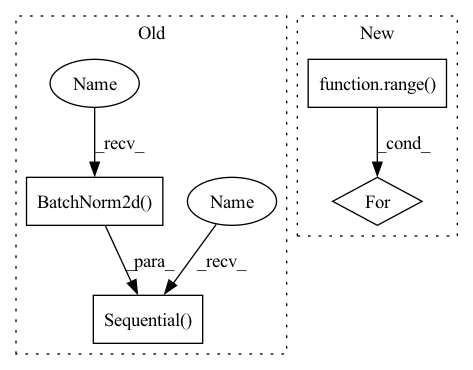

Pattern ID :1122

Before Change
nn.Conv2d(128, 256, 5, stride=2, padding=2),
nn.BatchNorm2d(256), nn.LeakyReLU(0.2)))
self.conv_blocks.append(
nn.Sequential(
nn.Conv2d(256, 512, 5, stride=2, padding=2),
nn.BatchNorm2d(512), nn.LeakyReLU(0.2)))
self.decision = nn.Sequential(nn.Linear(7 * 7 * 512, 1), nn.Sigmoid())
def forward(self, x):
After Change
// build up downsampling backbone (excluding the output layer)
curr_channels = base_channels
for _ in range(self.num_downsamples):
self.conv_blocks.append(
ConvModule(
curr_channels,
curr_channels * 2,
In pattern: SUPERPATTERN
Frequency: 3
Non-data size: 4
Instances
Fragment ID: 3290274
Project Name: open-mmlab/mmgeneration
Commit Name: e6233adabc8816f01d309e057be20fae845cdd3c
Time: 2021-04-27
Author: yangyfaker@gmail.com
File Name: mmgen/models/architectures/lsgan/generator_discriminator.py
M Class Name: LSGANDiscriminator
N Class Name: LSGANDiscriminator
M Method Name: __init__(10)
N Method Name: __init__(1)
M Parent Class: nn.Module
N Parent Class: nn.Module
M File Name: mmgen/models/architectures/lsgan/generator_discriminator.py
N File Name: mmgen/models/architectures/lsgan/generator_discriminator.py
M Start Line: 107
M End Line: 125
N Start Line: 220
N End Line: 277
'>
Before Change
nn.Conv2d(64, 128, 5, stride=2, padding=2),
nn.BatchNorm2d(128), nn.LeakyReLU(0.2)))
self.conv_blocks.append(
nn.Sequential(
nn.Conv2d(128, 256, 5, stride=2, padding=2),
nn.BatchNorm2d(256), nn.LeakyReLU(0.2)))
self.conv_blocks.append(
nn.Sequential(
nn.Conv2d(256, 512, 5, stride=2, padding=2),
After Change
// build up downsampling backbone (excluding the output layer)
curr_channels = base_channels
for _ in range(self.num_downsamples):
self.conv_blocks.append(
ConvModule(
curr_channels,
curr_channels * 2,
'>
Fragment ID: 3290275
Project Name: open-mmlab/mmgeneration
Commit Name: e6233adabc8816f01d309e057be20fae845cdd3c
Time: 2021-04-27
Author: yangyfaker@gmail.com
File Name: mmgen/models/architectures/lsgan/generator_discriminator.py
M Class Name: LSGANDiscriminator
N Class Name: LSGANDiscriminator
M Method Name: __init__(10)
N Method Name: __init__(1)
M Parent Class: nn.Module
N Parent Class: nn.Module
M File Name: mmgen/models/architectures/lsgan/generator_discriminator.py
N File Name: mmgen/models/architectures/lsgan/generator_discriminator.py
M Start Line: 107
M End Line: 125
N Start Line: 220
N End Line: 277
'>
Before Change
nn.MaxPool2d(2),
))
self.image_layers.append(nn.Sequential(
nn.Conv2d(in_channels=8, out_channels=3, kernel_size=5),
nn.Dropout(dropout_p),
nn.LeakyReLU(negative_slope=0.01, inplace=True),
nn.BatchNorm2d(num_features=3),
nn.MaxPool2d(2),
))
// self.image_layers.append(nn.Sequential(
// nn.Conv2d(in_channels=3, out_channels=3, kernel_size=3),
After Change
nn.MaxPool2d(2),
))
for _ in range(num_conv_layers):
self.image_layers.append(nn.Sequential(
nn.Conv2d(in_channels=8, out_channels=8, kernel_size=5),
nn.Dropout(dropout_p),
nn.LeakyReLU(negative_slope=0.01, inplace=True),
'>
Fragment ID: 3290272
Project Name: xushenlz/parksim
Commit Name: ec66e2d8e096621262c882cb331d5b4387849163
Time: 2022-04-05
Author: lacayomatt@gmail.com
File Name: python/parksim/trajectory_predict/vanilla_transformer/network.py
M Class Name: SmallRegularizedCNN
N Class Name: SmallRegularizedCNN
M Method Name: __init__(5)
N Method Name: __init__(3)
M Parent Class: nn.Module
N Parent Class: nn.Module
M File Name: python/parksim/trajectory_predict/vanilla_transformer/network.py
N File Name: python/parksim/trajectory_predict/vanilla_transformer/network.py
M Start Line: 43
M End Line: 98
N Start Line: 39
N End Line: 78
'>
Before Change
nn.BatchNorm2d(oup),
)
self.conv2 = nn.Sequential(
// pw
nn.Conv2d(oup, hidden_dim, 1, 1, 0, bias=False),
nn.BatchNorm2d(hidden_dim),
nn.ReLU(inplace=False),
// dw
nn.Conv2d(hidden_dim, hidden_dim, 3, 1, 1, groups=hidden_dim, bias=False),
nn.BatchNorm2d(hidden_dim),
nn.ReLU(inplace=False),
// pw-linear
nn.Conv2d(hidden_dim, oup, 1, 1, 0, bias=False),
nn.BatchNorm2d(oup),
)
def forward(self, x):
x = self.conv1(x)
After Change
)
self.conv2 = torch.nn.ModuleList()
for i in range(n):
self.conv2.append(IRBlock(oup, hidden_dim))
def forward(self, x):
x = self.conv1(x)
'>
Fragment ID: 3290273
Project Name: fire717/movenet.pytorch
Commit Name: 6eb59cd47bfde753530ed236335910bed9ba7c1d
Time: 2022-08-12
Author: fire15@126.com
File Name: lib/models/movenet_mobilenetv2.py
M Class Name: InvertedResidual
N Class Name: InvertedResidual
M Method Name: __init__(6)
N Method Name: __init__(6)
M Parent Class: nn.Module
N Parent Class: nn.Module
M File Name: lib/models/movenet_mobilenetv2.py
N File Name: lib/models/movenet_mobilenetv2.py
M Start Line: 83
M End Line: 113
N Start Line: 98
N End Line: 120